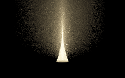
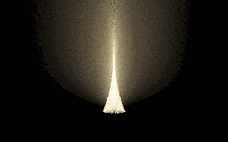
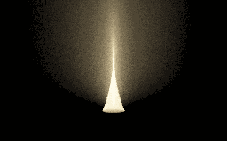
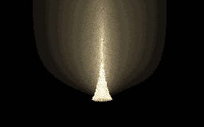
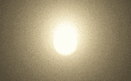
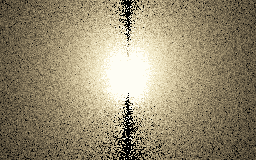
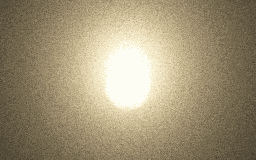
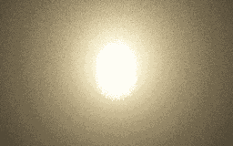

THE SAME GLASS. A DIFFERENT FAMILY.
Glass changes the sheet.
A cone becomes an hourglass. Its partner is a photon disk: sweep the other angle through the same glass. Tilt the input to see where the symmetry ends.
Follow a cone through the glass.
Every colored ruling obeys Snell’s law at entry and exit.The cone and disk release different coordinates of this same transmitted chain. Neither needs an extra medium bounce before the glass.
Try the bounded renderer experiment: Native hourglass + disk study → · Path measure and remaining limits →
WHAT CHANGES?
The useful part is the symmetry.
fix ψ · sweep (φ, r)A FAMILY, NOT A FREE SPEEDUP
A cheap crossing is only the start.
An untilted photon disk offers a simple camera–plane crossing. We still need to invert the refracted support, find every valid branch and account for its Jacobian. Close to a fold, an apparently easy connection can carry a very large weight.
The centered sphere hourglass keeps an analytic quadric; the central disk uses a plane plus a one-dimensional support solve. Their grazing directions differ, making a shared-measure mixture worth testing. The tilted and offset cases here are numerical geometry studies: drawing them does not automatically supply a valid transport estimator.

FROM THE SHEET TO A RADIANCE ESTIMATE
Two ways to find the same light.
The disk now runs beside the hourglass in RadianceLab. Both connect the light directly through glass to one fog scatter. The image shows only this selected contribution, so the glass itself and the rest of the scene are omitted.
The disk can reduce noise per sample, but its inverse solve costs more. In the measured cases, the hourglass remains the practical baseline. The mixture is a useful complementary chart, not a promised speedup.
Side view · the focused chain · compare four estimators
Same scene, 256 × 160 pixels and 96 passes per image. This compares equal sample budgets, not equal rendering time. All use +3 EV, without glow, blur or denoising.




Near-axis view · expose the disk’s weak direction · compare four estimators
Same scene, 256 × 160 pixels and 96 passes per image. This compares equal sample budgets, not equal rendering time. All use +3 EV, without glow, blur or denoising.




Finite numerical root partitions can miss narrow inverse branches; the separate reference has numerical limits too. These are retained renderer outputs, not browser-generated simulations. The schematic above remains a geometric explanation.
Revolve one chain.
Fix the polar angle, sweep azimuth and exit distance. A point source aligned with the sphere preserves rotational symmetry. This is the existing strategy 20 route.
Keep the meridian.
Fix azimuth, sweep polar angle and exit distance. This is the glass continuation of the photon disk, not an extra medium event. A half-disk is one oriented chart; the opposite half samples φ + π.
Separate the questions.
Conventional photon planes release lengths on multiple medium flights, so their path class can differ from this direct glass caustic. A plane-shaped sheet itself does not require two medium scatters. An area source supplies other coordinates, but needs its own support, emitter PDF and visibility treatment.